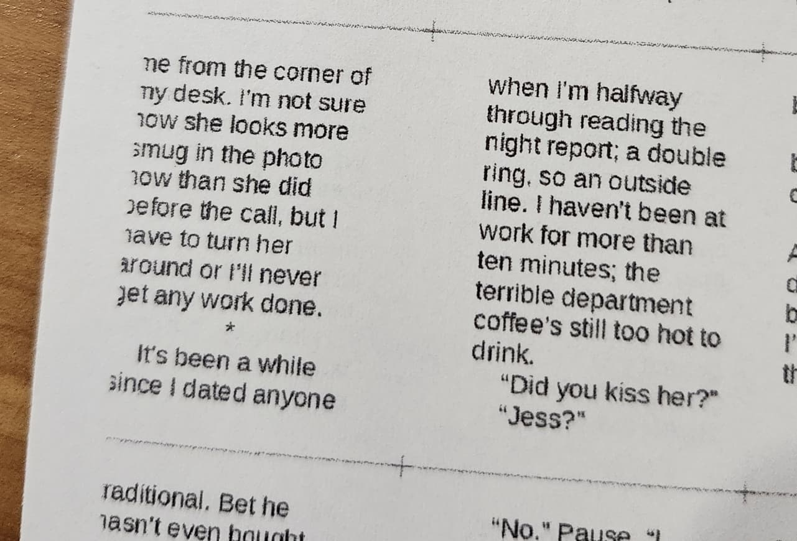
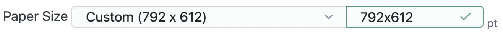

The VIP isn't written to be super user friendly, sorry.
If you're seeking help, you could reach me via a GitHub comment or issue over at the repository.
If you're over 18 years old, you could check out the Renegade Discord and hit up the @Imposer Tamers role.
But talking to people can be scary/hard, so I'll try and dump the answers to questions that I've heard here:
"Frequently" Asked Questions
(more like, "asked at least once")
Q: Is there a way to impose for a book that opens right to left?
A: If you normal-impose a PDF that has all its pages rotated 180 degrees you get a right-to-left book (thanks Lottie!) -- there's also the reverse PDF order button in the 2. PDF Manipulation section (useful if you want a reversed PDF to use for other things)
Q: Oh no! My printer ate the text at the edge of the page!
A: Use the Paper Margins fields in the 3. Printer Paper to specify how much space you need to hold in reserve for your printer. This space will only be applied at the edges of the page. There's a Download Test Print button that'll give you a PDF -- print that at 100% and count the black & white lines that are clipped/missing to figure out what margin your printer needs. (I use 13pt on both top and bottom to completely avoid it)
Q: How do I impose on Landscape orientated paper
A: a lot of default papers are provided in 3. Printer Paper section's dropdown. Note that the dimensions (in pt) are listed there. To rotate the paper, just type in a custom dimension that's the flip of the default. You don't need to select a custom dimension - just start typing in the text field and use x as the delimiter between the two values.
